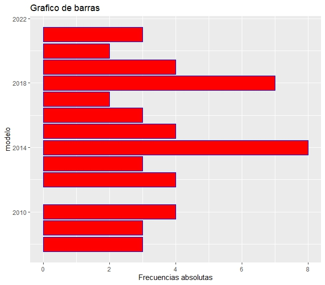
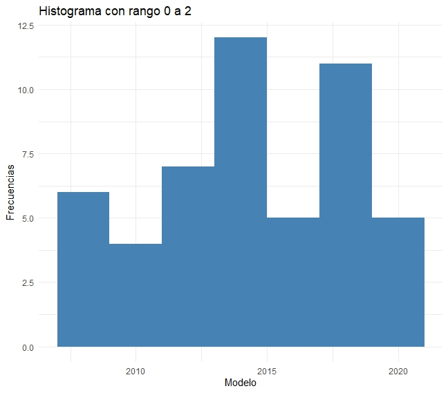
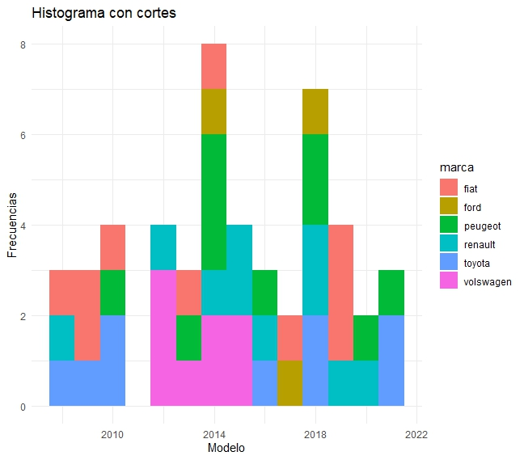
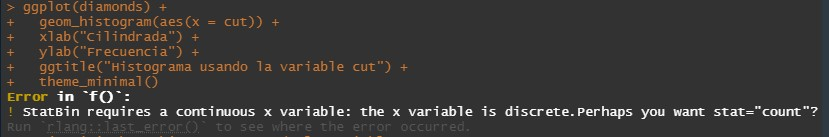
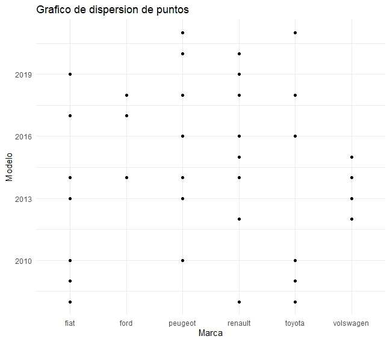

barplotbarplot en coloresbarplot con orientaciones cambiadasEmpezamos importando como objeto data, la base de datos de el tp anterior, y también las librerías que vamos a utilizar.
library(readxl)
library(ggplot2)
base_de_datos <- read_excel("../base_de_datos_tp3.xlsx")
base_de_datos
barplot variable modelo de autoggplot(base_de_datos, aes(x = modelo)) +
geom_bar() +
ylab("Frecuencias absolutas") +
ggtitle("Grafico de barras")

barplot con coloresggplot(base_de_datos, aes(x = modelo)) +
geom_bar(color = "blue", fill = "red") +
ylab("Frecuencias absolutas") +
ggtitle("Grafico de barras")

barplot con las coordenadas invertidasggplot(base_de_datos, aes(x = modelo)) +
geom_bar(color = "blue", fill = "red") +
ylab("Frecuencias absolutas") +
ggtitle("Grafico de barras") +
coord_flip()

barplot por distintos coloresggplot(base_de_datos, aes(x = modelo, fill = as.factor(modelo))) +
geom_bar() +
ylab("Frecuencias absolutas") +
ggtitle("Grafico de barras") +
labs(fill = "modelo")

ggplot(base_de_datos) +
geom_histogram(binwidth = 2, aes(x = modelo), fill = "steelblue") +
xlab("Modelo") +
ylab("Frecuencias") +
ggtitle("Histograma con rango 0 a 2") +
theme_minimal()

ggplot(base_de_datos) +
geom_histogram(binwidth = 1, aes(x = modelo, fill = marca)) +
xlab("Modelo") +
ylab("Frecuencias") +
ggtitle("Histograma con cortes") +
theme_minimal()

Aclaración: en este ejercicio no entendimos muy bien como realizar el histograma con cortes. Supusimos que se refería a este tipo de histograma. Donde se interpola los datos de dos variables en las columnas del histograma.
ggplot(base_de_datos) +
geom_histogram(binwidth = 0.1, aes(x = cilindrada)) +
xlab("Cilindrada") +
ylab("Frecuencia") +
ggtitle("Histograma usando la variable cilindrada") +
theme_minimal()

Aclaración: En este ejercicio entendimos que teniamos que usar una variable de nuestra base de datos, parecida a la variable
caratde la base de datosdiamonds. Por eso seleccionamos la única variable que teníamos con decimales.
ggplot(diamonds) +
geom_histogram(binwidth = 0.1, aes(x = cut)) +
xlab("Cilindrada") +
ylab("Frecuencia") +
ggtitle("Histograma usando la variable cut") +
theme_minimal()

Aclaración: en este ejercicio tuvimos dudas interpretando la consigna. Ya que hacer un histograma con la variable
cutde la basediamondsno fue posible, por sercutuna variable cualitativa discreta.
ggplot(base_de_datos, aes(marca, modelo)) +
geom_point() +
xlab("Marca") +
ylab("Modelo") +
ggtitle("Grafico de dispersion de puntos") +
theme_minimal()
